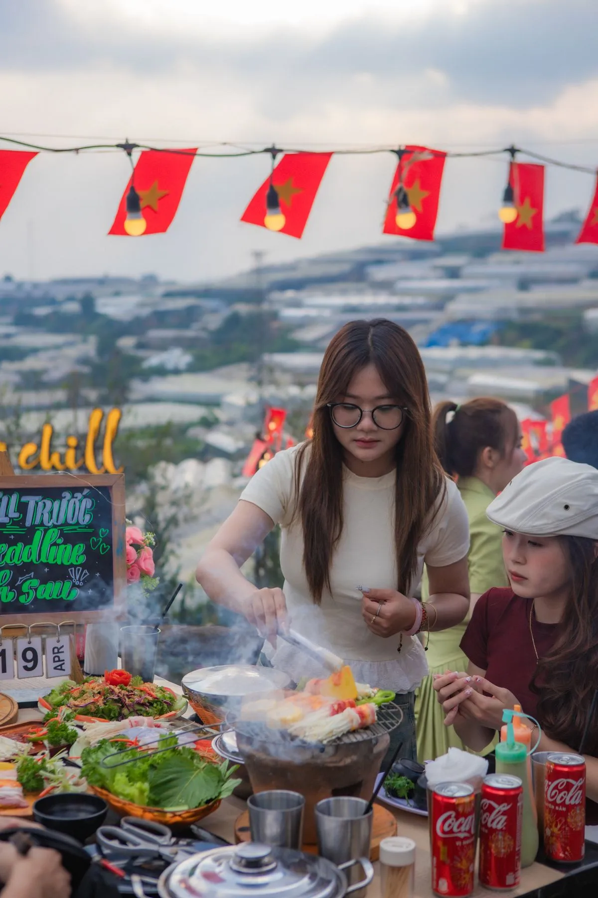

Mưa Đà Lạt — chuyện thường ngày, không phải lý do hủy kèo
Đà Lạt mùa mưa (khoảng tháng 5 đến tháng 10) hay có mưa chiều muộn rồi tạnh, ít khi mưa dai suốt tối. Người ở đây quen rồi: mưa xuống, trời hạ thêm vài độ, ngồi cạnh bếp than lại thành hợp. Vấn đề không nằm ở cơn mưa, mà ở chỗ bạn chọn quán kiểu gì và ngồi khu nào.
Bài này cố tình không xếp hạng quán. Đà Lạt có quá nhiều quán nướng mở rồi đóng trong một mùa, danh sách kiểu "top 5" viết hôm nay tháng sau đã sai. Cái dùng được lâu hơn là biết quán nướng Đà Lạt có mái che chia làm mấy kiểu, kiểu nào chịu mưa tốt, và đổi lại bạn mất gì.
Bốn kiểu che mưa thường gặp ở quán nướng Đà Lạt
Nhà kính, mái kính
Được: giữ được cảm giác ngoài trời, mưa gõ trên mái nghe rất đã, vẫn nhìn ra ngoài được.
Mất: nướng than trong không gian kính kín rất dễ bí khói và hầm nóng nếu quán không đầu tư quạt hút. Nên hỏi trước có hút khói ngay tại bàn hay không — đây là điểm quyết định chứ không phải cái mái.
Mái cố định (tôn, ngói, mái lá)
Được: chắc chắn nhất, mưa to gió tạt vẫn ngồi yên.
Mất: che luôn tầm nhìn lên trời, mất phần cảnh phía trên. Nếu bạn đi vì view, hỏi xem khu mái cố định có nằm ở rìa để còn nhìn ra ngoài không, hay nằm thụt sâu vào trong.
Bạt dù, ô lớn kiểu camping
Được: ra đúng cảm giác ngồi ngoài trời, chụp ảnh đẹp.
Mất: chỉ chịu được mưa nhỏ rơi thẳng. Mưa Đà Lạt hay kèm gió, gió một cái là tạt vào chân bàn. Trời đang chuyển đen thì đừng chọn khu này.
Phòng kín trong nhà
Được: khô ráo tuyệt đối, ấm, hợp khi đi cùng trẻ nhỏ hoặc người lớn tuổi.
Mất: lên Đà Lạt mà ngồi phòng kín thì mất gần hết lý do lên Đà Lạt. Coi đây là phương án dự phòng thôi.
Ba câu nên hỏi trước khi đi vào ngày mưa
- "Khu có che còn chỗ không?" — mưa xuống là ai cũng dồn vào khu che. Hỏi trước khi chạy 5–7 km lên tới nơi rồi quay đầu.
- "Bàn khu che có bếp nướng tại bàn không?" — vài quán chỉ bố trí bếp ở khu ngoài trời, khu trong chỉ phục vụ món làm sẵn. Đi ăn nướng mà ngồi khu không có bếp thì hỏng buổi tối.
- "Đường vào có dốc không?" — quán ngoại ô Đà Lạt nhiều dốc bê tông, mưa xuống trơn thật sự, nhất là khi đi xe máy.
Lưu ý khi ăn nướng trời mưa
Mang áo khoác dày hơn bạn nghĩ — mưa xong nhiệt độ tụt nhanh, ngồi ngoài trời buổi tối lạnh hơn con số hiển thị trên điện thoại nhiều. Đi giày có đế bám, đừng đi dép trơn: sân quán ngoại ô thường lát đá hoặc đổ bê tông, ướt là trượt. Đi xe máy thì đem theo túi ni lông nhỏ bọc điện thoại và ví. Và nếu mưa đang lớn, cứ gọi thêm một nồi lẩu — vừa ấm bụng vừa đỡ phải ngồi canh bếp trong lúc trời gió.

Ngày mưa ở Trạm Dừng Chill
Trạm Dừng Chill nằm ở 111 Huỳnh Tấn Phát, Phường Xuân Trường, cách trung tâm Đà Lạt khoảng 7 km về hướng Trại Mát, mở cửa 15:00–23:00. Ngày mưa thì nói thật: hoàng hôn khoảng 17h coi như mất, tàu lửa cổ Đà Lạt – Trại Mát chạy dưới chân quán tầm 18h cũng khó ngắm cho đã. Nhưng biển sao nhà lồng lên đèn từ khoảng 18h30 thì mưa hay nắng vẫn sáng, mà nhìn qua màn mưa lại mờ ảo hơn ngày thường. Các mốc giờ này chỉ để tham khảo, không phải lịch cố định.
Quán gọi món lẻ, không buffet và không combo cố định — hơn 70 món trong thực đơn, giá 95.000đ–300.000đ/người đã gồm VAT. Trời lạnh thì ba nồi lẩu là hợp nhất: lẩu gà lá é 300K, lẩu hải sản 320K, lẩu cá tầm 320K. Muốn có món nướng cho đủ vị thì thêm Bò Tảng Nướng Phô Mai Trứng Muối 210K.
Trước khi đi vào hôm mưa, gọi 0989.765.070 hỏi xem khu nào còn chỗ rồi hãy xuất phát. Bãi đỗ xe máy và ô tô con miễn phí, quán đón cả thú cưng, WiFi mạnh nếu bạn cần ngồi lâu chờ tạnh. Đặt bàn tại đây.